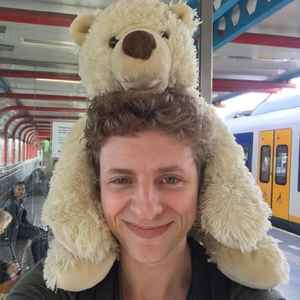

Nerd 8: Robert Spier
After CMD
Samenvatting
Deze week gaf Robert Spier, een Creative Technologist, een inspirerende lezing tijdens de Weekly Nerd sessie. Hij werkt als front-end developer en onderzoekt opkomende technologieën en verwachtingsmanagement. Robert bouwt onder andere een ChatGPT interface voor Deloitte en maakt deepfakes.
In zijn presentatie deelde Robert zijn toekomstplannen en gaf hij inzicht in de verschillende carrièrepaden die CMD-alumni kunnen volgen, zoals detachering, traineeships, freelance werk, en werken bij full-service agencies. Hij benadrukte het belang van het blijven leren van fundamentele dingen, nieuwsgierig blijven, en up-to-date blijven met technologische ontwikkelingen.
Robert gaf praktische adviezen over het zoeken van een baan, het onderhandelen over salaris, en het belang van voordelen zoals reiskostenvergoeding, vakantiegeld, pensioenopbouw, en een goed werkklimaat. Hij benadrukte dat het belangrijk is om de balans te vinden tussen materiële voordelen en immateriële erkenning, zoals een goede werksfeer en leuke collega's.
Reflectie
Ik vond deze Weekly Nerd sessie erg boeiend en relevant. Robert's manier van spreken en de interactie met het publiek zorgden ervoor dat de presentatie levendig en toegankelijk was. Zijn praktische tips over het zoeken van een baan, salarisonderhandelingen en het belang van fundamentele kennis en nieuwsgierigheid waren bijzonder nuttig, vooral omdat deze onderwerpen niet vaak in onze lessen aan bod komen.
Robert's ervaringen en projecten, zoals het bouwen van ChatGPT interfaces en het maken van deepfakes, gaven een goed beeld van de mogelijkheden en uitdagingen binnen het werkveld van een Creative Technologist. Deze sessie was een waardevolle aanvulling op onze opleiding en gaf veel stof tot nadenken over onze toekomstige carrière.
Conclusie
Robert Spier's lezing was informatief en inspirerend, met veel praktische adviezen die direct toepasbaar zijn. Zijn open en interactieve stijl maakte het een van de meest boeiende Weekly Nerd sessies. Ik beoordeel deze sessie met een rating van 8/10.